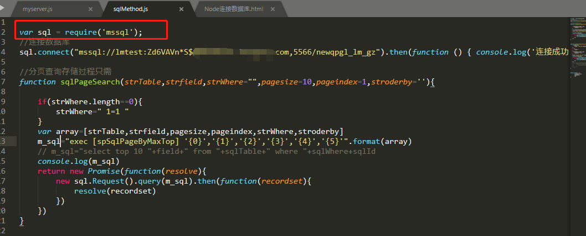
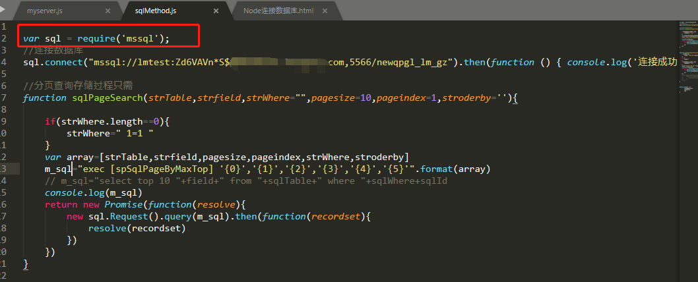

1、安装node.js 。
2、创建一个 js文件
3、npm 安装 mssql ：npm install mssql 然后引入var sql = require('mssql');
4、建立js文件专门处理SQL：sqlMethods.js,代码如下： 
2、创建一个 js文件
3、npm 安装 mssql ：npm install mssql 然后引入var sql = require('mssql');
4、建立js文件专门处理SQL：sqlMethods.js,代码如下： 